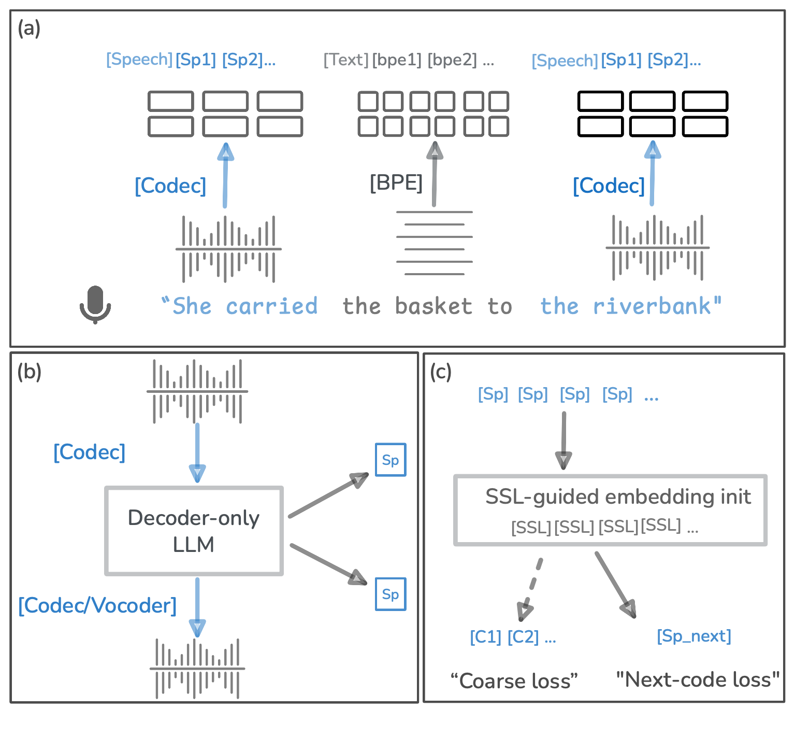

Acoustic Consistency in Speech-Only and Interleaved Speech Language Models
Authors: First Author, Second Author, Third Author
Paper
Hugging Face

Figure 1: Method overview. Replace this caption if desired.
Speech Samples
Item
Prompt
Resynthesis
Generated